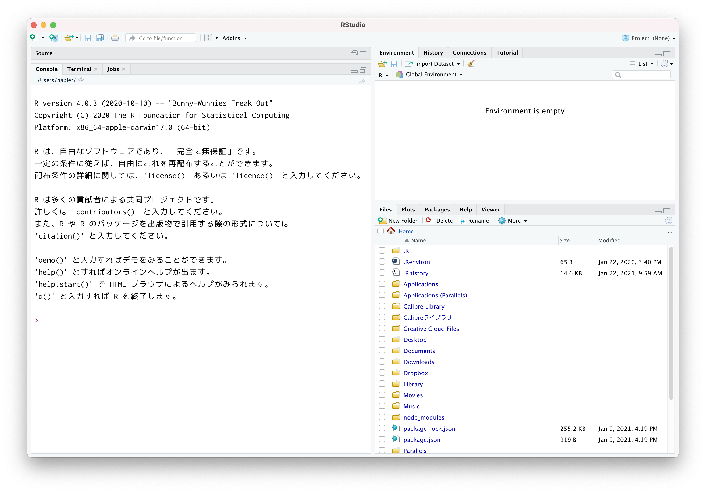
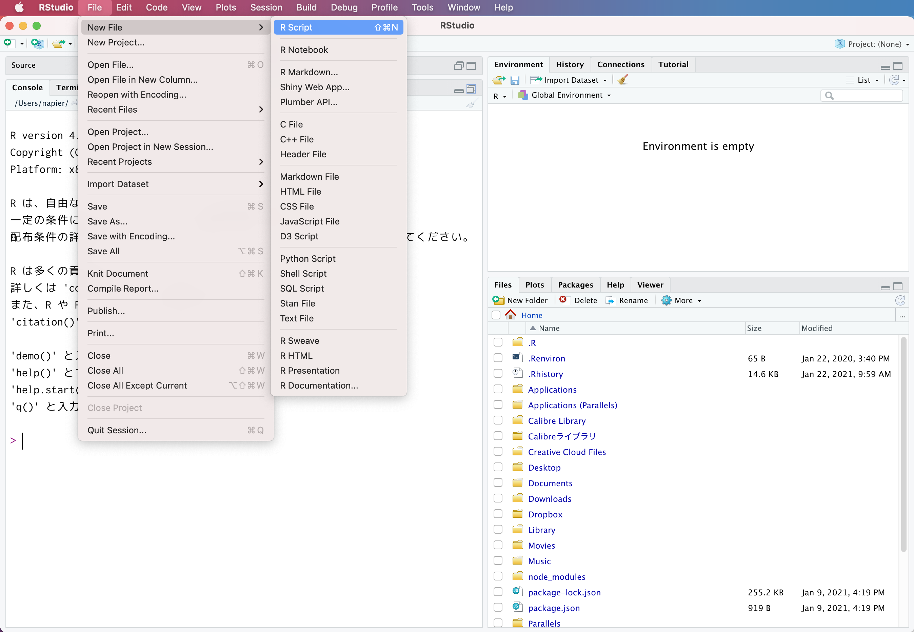
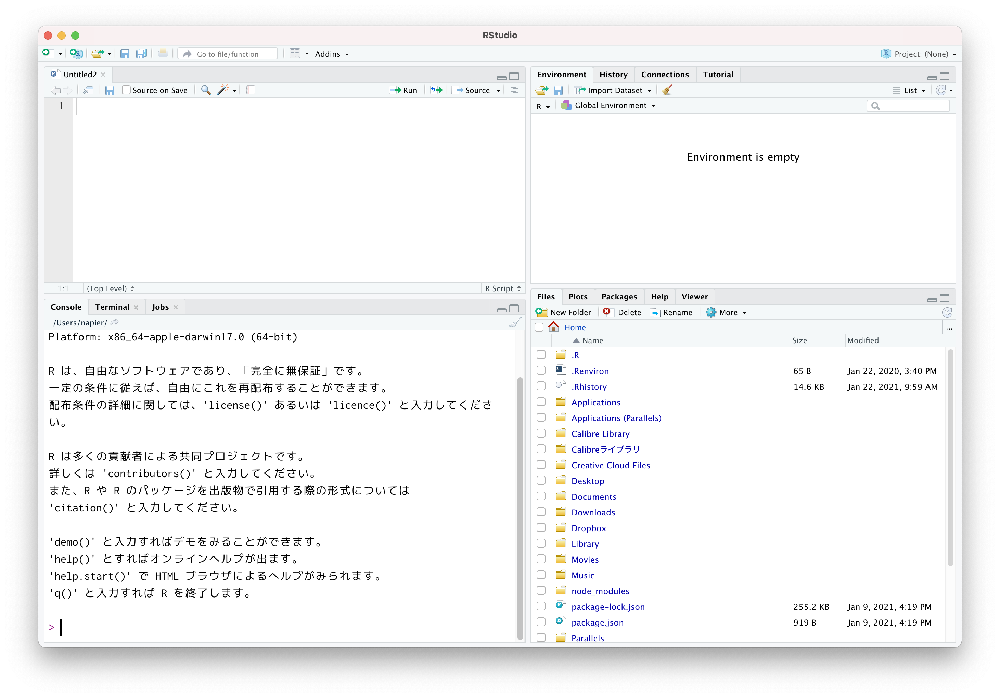
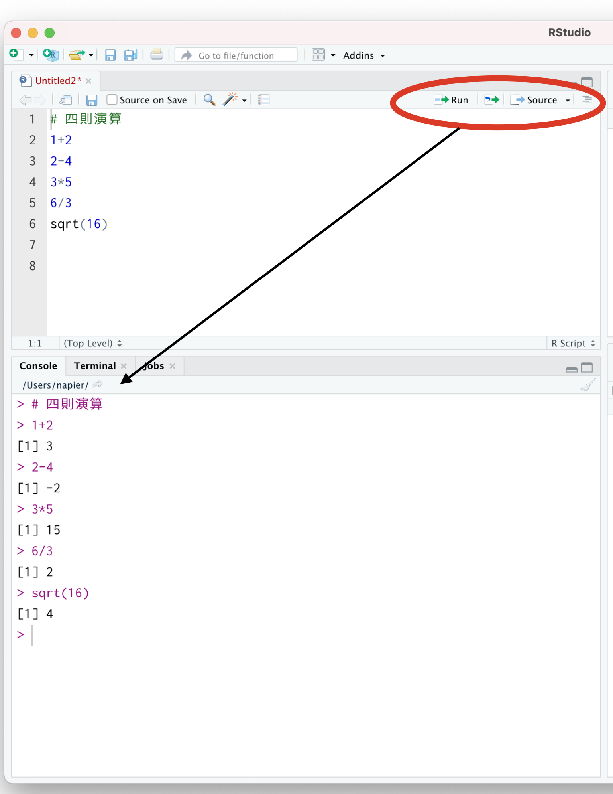
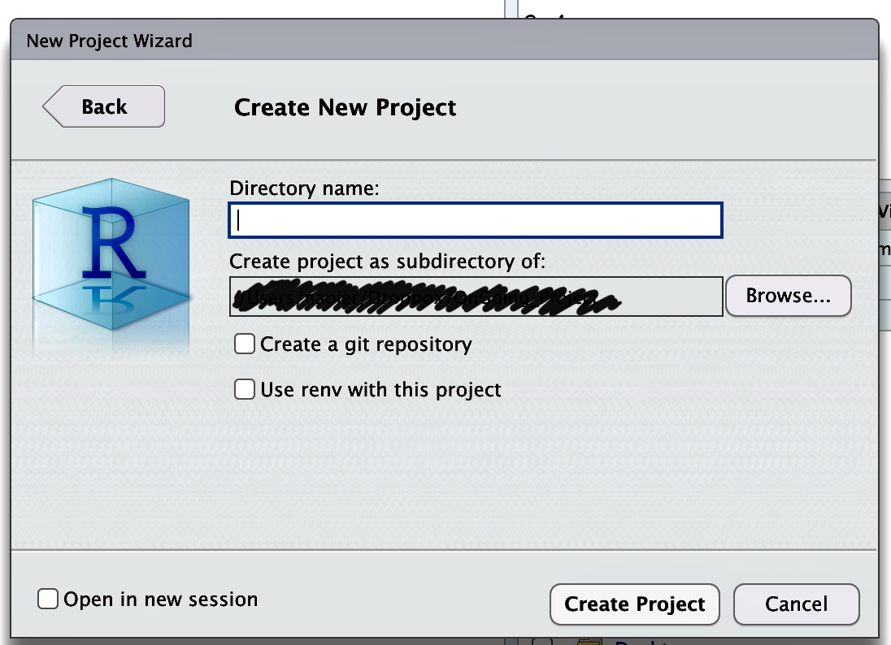
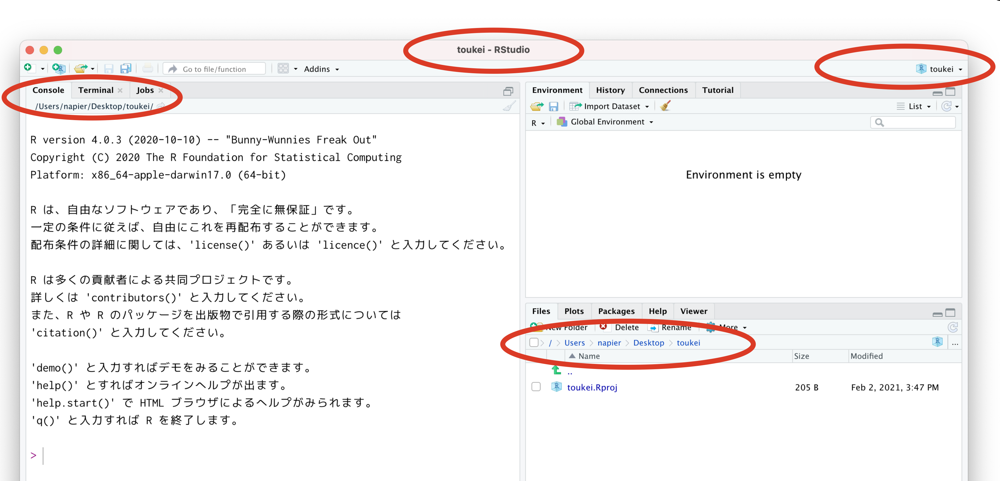
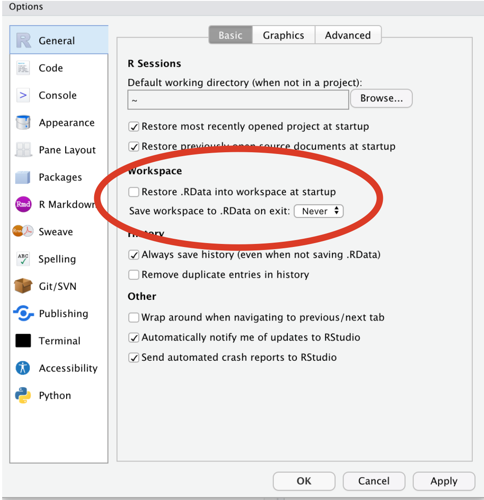
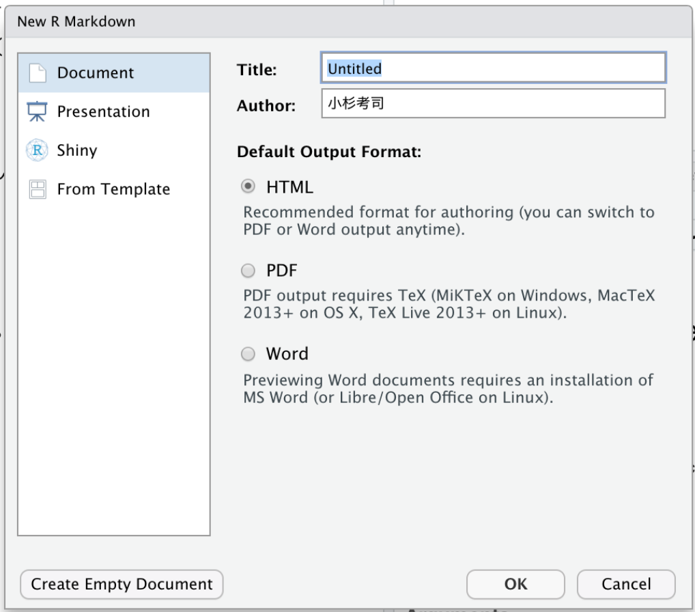
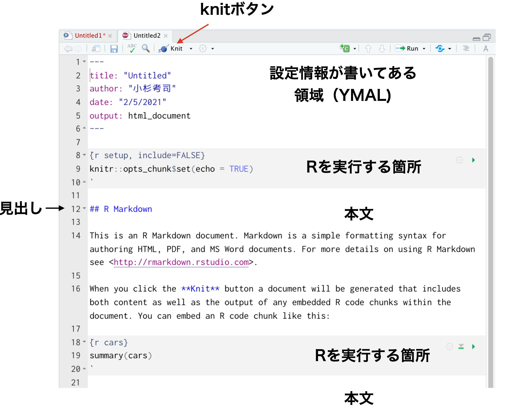
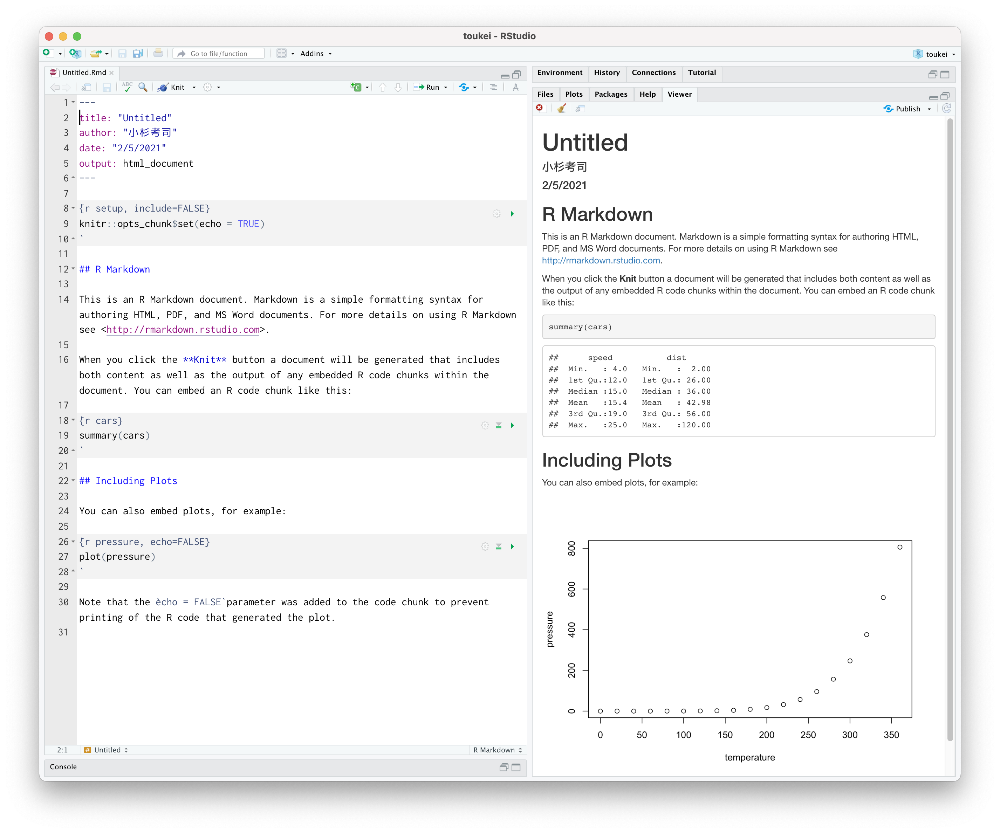

Chapter 24 統計環境Rを使ってみる
ここまで，データを可視化したりデータの代表値を計算する方法について学んできましたが，実践上これらは全てコンピュータを使って行います。 今回はPCを使った実践的な内容になります。パソコンを実際に触りながら，意図したことを正しく機械に伝え，意図した結果を得られるようにスキルアップしていきましょう。
24.1 環境の準備
24.1.1 統計解析環境とアプリケーション
皆さんはパソコンをどういう用途で使うことが多いでしょうか。インターネットで調べ物をしたり200メールの読み書きをする，というのが多いかもしれません。FacebookやTwitter，InstagramなどSNSを利用する，これもインターネットに関係するアプリケーションですね。これらはスマートフォンやタブレットなどの方が手軽で便利にアクセスできるので，それらを使うことの方が多いかもしれません。
インターネットにアクセスするのではなく，手元のPCで(ローカル環境で)作業する例としては，文章を書くことが多いでしょう。大学生をはじめ研究者というのは基本的にコミュニケーションをする人ですから，半ば文筆業であると言っても過言ではありません。またこの文章を作成するために，必要な資料を作ることがあり，数値データを扱う場合は表計算ソフトを使うことになるでしょう。表計算ソフトの代表例として，Excel，Numbers，Calcsなどがあります。表計算ソフトは記述統計量やグラフの作成など，これまで学んできたことが簡単にできるものがありますが，それ以上の複数の変数を一度に扱った分析を行うのには，機能的に不十分です。
そこで，より専門的な統計的処理をするためには，統計専用のソフトウェアを使うことになります。統計専用のソフトウェアとしては，SPSSやSAS，Stataなどの商用ソフトウェアもありますが，専修大学人間科学部心理学専攻では現在，Rを学科共通のツールとして利用することにしています。
24.1.2 統計環境R
Rは統計環境，統計言語とも呼ばれることがあります。統計に関する分析をCUIで行うので統計”言語”と呼んだり，数字だけでなく図を描くなど数値処理に関わることを全体的にカバーしているので”環境”と呼ばれたりします。Rが優れている点はフリーソフトウェアであるという点で，誰でも無償で利用できることです。商用ソフトウェアと違って，ソースが公開されているのでその気になれば誰でもその内部構造を調べることができますから，間違い(エラー，バグ)がないかどうかをみんなの目でチェックできるというのが利点です。金銭的に補償があるわけではないのですが，そもそも学問の世界は市井の資本主義的発想とは異なる価値で評価される世界ですから，無償であることは問題になりません。
またRは多くの研究者が利用しており，その研究成果をフリーソフトウェアの精神で共有しています。こうしたRの基本関数以外の機能は，パッケージという形で提供されます。Rのパッケージを共有している場所はThe Comprehensive R Archive Network()と呼ばれ，ここに登録されているパッケージは誰でも利用できます。最先端の分析ツールがここを介して共有され，間違いや問題が生じたら随時修正されていきますので，成長する統計ソフトウェアということができるでしょう。
24.1.3 総合開発環境RStudio
Rは優れた統計ツールではありますが，本体だけでは簡素な言語的やりとりができるに過ぎません。分析を進めていくとすぐにわかりますが，ファイルの操作や描画機能，過去ログの参照や管理など，統計言語を扱う際にそれを取り巻くさまざまな操作が必要になります。ここをカバーしてくれるのがRStudioというアプリケーションです。
RStudioはそれ単体では使うことができません。Rが入っているPC上で，Rを取り込んで初めて意味のあるアプリケーションになります。Rの計算機能を活用するだけでなく，文書作成機能やデータベースとの連携など非常に高機能な統合的サービスを提供してくれます。文章を書き，その文章に必要な計算を行い，その結果が全て記録(スクリプト，コマンド，プログラム)として残るわけですから，科学論文を書くためにはRStudioだけでも十分です。
24.1.4 統計環境の準備
専修大学の情報科学センターにあるPC室や，心理学科が管理する4号館4FのPC室にはRやRStudioがすでにセットアップされていますので，これを利用するのであれば特に準備は必要ありません201。
しかしながら，大学のPC室に行かなくても自宅で論文やレポートを書きたい，ということもあるかもしれません。また，大学などの設備は大学が管理していますので，自分でパッケージを追加したい，とおもっても管理権限がなくうまく行かないこともあるかもしれません。幸いRやRStudioはフリーソフトウェアですので，手元のPCにインストールして環境を構築するにしても，元手は一切かかりません。これを機に，自分のパソコン環境にR/RStudioを準備しておくと良いでしょう。
RやRStudioの環境構築については，その方法を検索すればさまざまなものが出てきますので，そちらを参考にしてください202203。書籍では，手前味噌で恐縮ですが@kosugi2019などが良いでしょう204。
以降は環境が準備できているものとして解説を続けます205。
24.2 RとRStudioの基本的な機能
それでは今から，RStudioを使った統計処理の演習を始めましょう。少し不便かもしれませんが，この資料を横に置いて，必ず自分でコードを入力しながら進めていってください。テキストと同じ結果が手元で再現できることを確認しながら進むことは，再現できることの重要性の確認になります。また，最初のうちは打ち間違えなどで思うように動かないことも頻発するでしょうが，その経験を繰り返すことで徐々に使い慣れていきます。失敗の経験はテキストの文中に書き込まれていませんから，読むだけでは身につきません。また，読み進んで気が向いたところだけ実行するときは，その前のデータや内容を参照している場合にエラーになるので，結局元に戻ってやり直すことになります。最初のうちは写経して作法を身につけることも重要なのです。最初の基礎的な訓練206ができていると，徐々に大きなプロジェクト207を動かすことができるようになりますので頑張って！
24.2.1 RStudioの機能と画面
最初にRStudioを起動すると，図1.1のような画面になっていると思います208。ここでメニューからFile > NewFile > RScriptと進むと(図1.2)，画面に白いページの領域が追加されます(図1.3)。
大きくみると画面が四分割されたようになります。この4つの領域を基本として話を進めていきます209。

RStudio起動初期の画面

新しくスクリプトファイルを開く

RStudioの画面
24.2.1.0.1 コンソール・ペイン
デフォルトでは画面の左下になりますが，ペインにあるのがRそのものです。 RStudioはRを取り込んで使いやすくする環境を提供するもの，という話をしましたが，とりこまれたRだけの画面が左下にあります。そこにはRのバージョン情報や，次のような注意書きが書かれています。
R version 4.0.3 (2020-10-10) -- "Bunny-Wunnies Freak Out" Copyright (C) 2020 The R Foundation for Statistical Computing Platform: x86_64-apple-darwin17.0 (64-bit) R は、自由なソフトウェアであり、「完全に無保証」です。 一定の条件に従えば、自由にこれを再配布できます。 配布条件の詳細に関しては、'license()' あるいは 'licence()' と入力してください。
その下に>という記号が出ていると思います。これは入力を待っている状態でこの記号の左側に命令をどうぞ，という意味です。この記号が出ているときは，Rは次の動作準備OKで指示を待っているという状態です。ここにコードを入力すれば計算結果が出力されるのですが，その前にスクリプトペインの説明をします。
24.2.1.0.2 スクリプト・ペイン
スクリプトペインは，Rのコードを書くところです。Rは一問一答型(インタプリタ210方式ともいいます)なのですが，実際の統計処理はあれをして，これをして・・・とたくさんの処理が連なることになります。この一連の手続きを書いておくのがこの場所です。
スクリプトとはお料理のレシピのようなものです。1つ1つの計算は，例えば「玉ねぎをみじん切りにする」といった単一の作業をさせることになりますが，全体としてハンバーグを作るのが目的であれば，1つ1つの作業を全て順番通りに実行しなければなりません。直接コンソールペインに書き込んで言ってもいいのですが，途中で「今どの工程だっけ」というのがわからなくならないとも限りませんので，一旦スクリプトのところに書いてから実行する，という手段を取るのが便利です。
実際にコマンドを1つ1つ書いていくときには，書き間違えたり違う方法を試したくなったりするので，書いたり消したりしながら進むのが普通です。ですが最終的には清書したものだけを残すようにしましょう。下書きの要素も全て記録していると，あとで何がどうなったかわからなくなります。また，何度か繰り返しているうちに「何にどのような操作をしたか」がわかっているようでわからなくなることがあります。最終的には，1つのスクリプトファイルを一行目から順に実行していけば，全ての作業が再現できるようにする，ということが重要です。途中で別のレシピを参照したり，記録されたいない操作を挟むのはやめましょう。
さてでは，このスクリプトペインにcode:[code::05_01]を書いてみてださい211。
{#code::05_01 .c++ language="c++" label="code::05_01" caption="四則演算のコード"} # 四則演算 1+2 2-4 3*5 6/3 sqrt(16)
24.2.1.0.3 コード解説
- 1行目
コメントアウト。
#記号で始まる行は，その後ろに何を書かれていてもRは無視します。なので，この記号を冒頭に描いて，ここに何をしているかという説明を書き入れています。このコメントは，あとで見直す時に何をしていたか判るためのものなので，必ず書かなければならないというものではないのですが，あればあるほど親切で丁寧なコードと言えるでしょう。- 2-5行目
順に和，差，積、商を求めるコードです。積
*と商/の記号はPCではこのように書きますので注意してください。- 6行目
これは関数を使って答えを出しています。
sqrt関数は正の平方根を返します。
書いたあと，スクリプトペインの右上にあるRunを押すと一行ずつ実行されていきます。マウスで複数行を選んでRunボタンを押すと囲んだ箇所を実行します。このスクリプトペイン全体を実行したいときはSourceボタンを押します。

スクリプトを実行する
これらのボタンを押すと，コードがコンソールに送られて実行結果が返ってきます(図1.4)。コンソールに示されているものは，この資料では次のような囲みで表現します(console[RS:out05_01])が，さて，みなさんの環境で同じ結果が得られましだでしょうか。
四則演算out05_01
> # 四則演算
> 1+2
[1] 3
> 2-4
[1] -2
> 3*5
[1] 15
> 6/3
[1] 2
> sqrt(16)
[1] 4出力をみると，1つ1つの問い(例えば1+2)に対して，毎回答え(例えば[1] 3)が返ってきています。一行ずつ実行した人はわかると思いますが，毎回>の記号がでてRが回答準備ができている時に，次の命令を受け入れることになります。もしおかしなコマンドが入っていれば，エラーが出ているはずですので，それをよく読んでどういうエラーなのかを考えましょう。我々が書くコードは，ミスやバグが多分に含まれます。私もいまだにスペルミスでエラーを発生させています。複数行を一気に実行してしまうと，どこにエラーが出ているかわかりにくなりますので，一行ずつ実行することを強くお勧めします212。
ところで，\(1+2\)の答えは\(3\)ですが，出力の[1]はなんでしょう？
これは答えの要素がひとつ，という意味です。これからたくさんのデータを一度に処理することがありますが，そのときは答えがたくさん出てくることがあるので，その場合は何行にもわたって答えが返されることがあります。詳しくは後ほどの実践例で説明していきます。
さて，これが基本中の基本の使い方です。実践的な内容に入る前に，そのほかのRStudioペインの説明をしていきましょう。
24.2.1.0.4 Environment/History・ペイン
画面の右上にあるのはEnvironmentやHistoryのペインです。Environmentは環境，すなわちこのRの頭の中にどういう変数、関数が入っているかを示してくれるところです。例えばたくさんのデータセットを読み込んだ，というときは，それがどういうデータなのかを示してくれたりします。
Historyは履歴を表すタブです。ここをみると，今実行した過去のログが残っています。「さっき書いた命令をもう一度実行したい」というときはここで探すといいでしょう。このペインには，to Sourceやto Consoleというったボタンもあります。ある行を選んでこのボタンを実行すると何が起こるか，確かめてみてください。
24.2.1.0.5 Files/Plots/Packages/Help/Viewer・ペイン
右下のペインはよく使う便利なところです。
Filesペインは，ファイル操作をする場所です。ファイルのコピー，移動，フォルダの作成などができます。エクスプローラやFinderと同じようなものだと思ってください。
Plotsペインは図の出力を確認するところです。ここで作られた図を適当なサイズやファイル形式に変換して出力することもできます。
Packagesペインは，Rのパッケージを管理するところです。Rはパッケージを追加することで機能がアップしますが，この追加やアップデートをこのペインで実行すると便利です。
Helpペインは，関数のヘルプが表示されるところです。表記は全て英語なのが残念ですが。
ViewerペインはHTMLなどの出力をみる画面です。
これらは必要に応じてみていくことになりますので，ここでは大体のイメージが掴めていればOKです。またこれらのペインは場所を変えることも可能ですので，自分の良いようにレイアウトしてみてください。
24.2.2 プロジェクト管理とRmarkdownによる実践
さて環境の意味がわかったところで，いよいよ実践に入っていきます。先ほども少しコードを書いてみましたが，今度はより本格的に使っていこうと思います。
24.2.2.1 プロジェクトによる管理
RStudioを使う時の基本は，プロジェクトによる管理です。分析するデータ、テーマ、内容によってプロジェクトを切り替えながら使います。みなさんはこの授業の他にも，Rを使う授業があるかもしれません。また，学年が上がっていくについれて，様々な心理学実験，研究に関わっていくことになります。その時、全てを同じドキュメントフォルダに入れてしまうと、何が何だかわからなくなるので，フォルダごとに区分しますよね。それと同じように，Rで作業する場所をRStudioでもくぎりながら管理しようということです。
メニューバーからFile > New Projectと進んでください。すると「New
Directory」「Existing Directory」「Version
Control」の選択肢が出てきます。New
Directoryは新しいディレクトリ(=フォルダ)を作ってそこで関連ファイルをまとめますよ，という意味です。Existing
Directoryは既に存在するディレクトリ(=フォルダ)をまとめる場所にしますよ，という意味です。みなさんの環境に応じて使い分けてください。ここでは新しくフォルダを作る例を説明します213。

プロジェクトを作る場所を選ぶ
図1.5にはNew Directory > New Projectと進んだ次のウィンドウを示しています。黒く塗りつぶしているところは私の個人的なPC環境の内容が反映されるので誤魔化しているんですが，みなさんの環境にあった場所(DocumentとかDesktopと言った場所)を選び，上の空白になっているところに新しいプロジェクト名(例えばなど214)を入力してOKとします。するとしばらくすると，画面が変わるはずです。一見同じ状態のようにも見えますが，実はところどころ違いがあります。気がつきましたか？

プロジェクトで開いている場合
図1.6にはプロジェクトを開いている時のRStudio画面を示しています。赤く丸で囲っているところが，プロジェクトを開いていない時との違いがある箇所です215。これをみると，コンソールペインやFileペインの場所に，今指定したフォルダの位置が示されていることがわかります216。このプロジェクトが開いているフォルダに移動していることが重要で，このフォルダの中が今作業している場所として認識されるので，このフォルダの中にあるファイルにはファイル名だけでアクセスできるようになります。プロジェクトが違ったり，プロジェクトの起動をしていなかったりすると，作業している場所217が変わりますので，注意が必要です218。
以下ではみなさん自身でRコードを書いていくのですが，誰しも，間違いなく，エラーに遭遇します。 エラーはムカつきますし，理由がわかりませんし，何書いているかわからん！ってなりますよね。
でも，エラーはヒントなのです。ここでこういうエラーが生じましたよ，というヒントをくれているし，それに対応しさえすればちゃんと動いてくれます。 プログラムは思った通りに動くのではなく，書いた通りに動くのです。 ですから，赤字で何か出てきた場合はどういうエラーなのかを読み取るようにしましょう。何行目の，どの部分で生じたエラーかが別れば，対応の仕方がわかります。
最初のうちはエラーの読み方もわからないと思います。そういう時は遠慮なく質問してください。ただし質問する時に「エラーが出て動きません」とだけ言われても困ります。エラー情報がないと私も対応できませんから。 「何行目を実行したら，これこれこういうエラーが出て動きません」と言われると，対応できます。怖がらずに進めていきましょう。
24.2.3 Rの基本操作
ではこのプロジェクトの中で、演習を進めていきましょう。
先ほどと同じように，File > New File > R Scriptと進んで新しいスクリプトファイルを開きます。
今から色々書いていきますが，これを記録しておくには，ファイルを保存する必要があります。File > Saveと進むと保存できますので，ファイル名をつけて保存します。拡張子219は.Rにしておきましょう(小文字の.rでも結構です)。特に思いつかなければ，Lesson01.Rとでもしておいてください。
24.2.3.1 関数の利用
先ほど，sqrt(16)という関数の例をみました。このsqrt関数はスクェアルート，つまり平方根を求めろというものです。何の平方根を求めるか，というと16という数字の平方根ですので，実行すると4という答えが返ってくるわけです。
このように，関数名で命令を指定し，その対象は小かっこ()で囲って渡すというやり方をします。\(f(x)\)ということですね。括弧の中に入るものはといい，今回のように目的となる数字を渡すこともありますが，そのほか関数を動かす上でのオプションを指定することもあります。また，1つの引数だけではなく，複数の数字を渡したり，複数のオプションを指定することもあります。
例えば関数がどのように動くか知りたいという時，ヘルプを開くのも関数で行います。code:[code::05_02]を実行すると，Helpペインにその説明が出てくるので確認してみてください。
{#code::05_02 .c++ language="c++" label="code::05_02" caption="ヘルプのコード"} # ヘルプも関数 help(sqrt)
24.2.3.2 パッケージの利用
Rでは関数を使って様々な計算をこなします。Rをインストールした段階でも，簡単な統計計算は十分できるようになっています。ですが，より専門的な分析やより高機能な情報処理をしようとするならば，を利用することになります。Rは豊富なパッケージが利用できることがその特徴で220，パッケージはCRANを通じて世界に公開されています。RStudioのパッケージペインを開くとinstallとupdateというボタンがありますが，installボタンを押すと何のパッケージをとってくるか，入力できるようになります221。“Packages”とあるところに必要なパッケージ名を入力すると，自動的にCRANにアクセスしてダウンロードが始まります。パッケージのインストールとダウンロードはその環境下では一度実行するだけで結構です。パッケージというのは関数群であり，関数を記載したファイルのダウンロードが終われば適切な場所(Library)に保存されます。
ただ，ダウンロードしただけではすぐにその関数が使えるようになりません。ダウンロード後は，必要に応じてlibrary関数でパッケージを呼び出してやると，パッケージに含まれる関数が使えるようになります。購入したものを装備するかどうかは別，ということを頭の片隅に置いておいてください222。
また，パッケージの中には関係するパッケージを一まとめにしたパッケージというのもあります。インターネットへのアクセスは必要ですが，優れたパッケージを無償で入手できますので，便利なものをいくつか決めていれとくと良いでしょう。本講義で必要なパッケージは随時指定しますが，ひとまずはtidyverseパッケージ(Wickham et al. 2019)を入れておきましょう223。
このインストールは，RStudioのパッケージペインからも実行できますが，code:[code::05_02b]のようにコードを使って実行することも可能です。
{#code::05_02b .c++ language="c++" label="code::05_02b" caption="コードからインストールする"} install.packages("tidyverse")
24.2.3.3 オブジェクトの利用
Rで扱う変数、関数、データセットなどには全て，名前がついています。なまえがついた「それ」のことをオブジェクトと呼びます224。code:[code::05_03]を書いてみてください。
{#code::05_03 .c++ language="c++" label="code::05_03" caption="オブジェクトに代入"} # オブジェクト A <- 2 B <- 3 A + B A
- 1行目
コメント
- 2行目
Aと名付けたものに数字の2を代入する。代入の記号は小なり(
<)とハイフン(-)の二文字でできていて，矢印記号\(\leftarrow\)を表しています。RStudioの機能で，Macの場合はoptionとマイナス記号，Windowsの場合はAltキーとマイナスを同時に押すと入力できます。。- 3行目
Bと名付けたものに数字の3を代入しています。
- 4行目
オブジェクトAとオブジェクトBを足し合わせています。
- 5行目
オブジェクトAの中身を表示させろ(中身はなんだっけ)，という意味です。
実行結果はconsole[RS:out05_02]のようになるでしょう。
オブジェクトに代入するout05_02
> # オブジェクト
> A <- 2
> B <- 3
> A + B
[1] 5
> A
[1] 2一行目は当然なんの回答もありませんが，2，3行目を実行してもすぐに次のプロンプト(>)がでて指示待ちになります。これは「代入しろ」といわれたから代入したのであって，特に反応を求めてないからです。次の4行目になって初めて足し算をせよ、と言われたのでその結果が5である，と返答しています。また，5行目はAとだけ入力されました。このように指示待ちの時にそのオブジェクト名を入れると，その中身を全て表示してくれます。今回は2がはいっているので，2ですよ，と答えてくれています。
このようにオブジェクト名だけで計算を進めることが可能です。オブジェクト名はなんでもいいのですが，TRUE, FALSE, NAなどRが特別な意味を持たせている言葉や，piなどの数学的意味がある言葉は予約語といって既に使われているので，そのままの方がいいでしょう。かといって，A,
B,Cといった無味乾燥な記号でもわかりにくいので，その時々に応じて任意の名前をつけてあげてください。
ちなみにこの「オブジェクトに代入」は基本的に上書きされるというルールです。先程のコードに続いてcode:[code::05_04]を書いてみてください。
{#code::05_04 .c++ language="c++" label="code::05_04" caption="オブジェクトは上書き"} A <- 4 A + B
今度は結果として7が表示されたと思います。先ほどはAに2を代入せよといい，そのあとでAに4を代入せよと命じたので，いまAは4に上書きされています225。この基本的に上書きされる，ということはよく注意しておいてください。というのも，これから長いコードを書くことがあったときに，部分的に実行を繰り返すと上書きに上書きを繰り返すこともあり得るからです。そうすると，ある時うまくいったけど，次に同じことをしようとしたらうまくいかなかった，ということにもなりかねません。くどいようですが記録は再現性の担保のためにやっているわけですから，一時的な記憶やたまたまうまくいった例に依存しては困ります。環境が空っぽの状態，クリアな状態で一行目から順に走らせて，何度やっても同じ答えが出るようにしましょう。
環境をクリアにするには，Environmentタブのバーにある箒のアイコンをクリックします。これでRの頭の中が空っぽになります。あるいはrm(list=ls())というコードを実行するとクリアされます。スクリプトの一行目にこれを書いておくことをお勧めします。
また，Rは終了すると，それまでの作業を保存しますから，同じプロジェクトをもう一度開くと以前の記憶が蘇ります。これが便利なのですが実は少し厄介で，学生さんが「自分の環境ではできた」といっても私の手元で再現できない(からレポートやり直し)ということがあります。きっと記録されているスクリプトの外で，なんらかの作業がなされているのです。清書できたスクリプトは，Rの頭の中を空っぽにしてから再チェックすると良いでしょう。また，Tools > Global Optionから，Workspaceの”Restore
.RData into workspace at a
startup”(起動時に.RDataからワークスペースの情報を復元する)のチェックを外し，“Save
workspace to .RData on
exit”(終了時に.RDataにワークスペースの情報を保存する)を”never”(絶対そんなことしない)にしておくことで，いつでもクリーンな環境から始められます(図1.7)。

クリーンな環境をいつでも保つための設定
24.2.3.4 オブジェクトの型1・ベクトル
code:[code::05_05]を実行してみましょう。
{#code::05_05 .c++ language="c++" label="code::05_05" caption="ベクトル処理"} obj1 <- 1:10 obj1 + 2 obj2 <- c(2,3,4,1,2,3,4,5,6,7) obj1 + obj2
- 1行目
obj1オブジェクトに”1:10”を代入- 2行目
obj1オブジェクトに2を加える- 3行目
obj2オブジェクトに”c(2,3,4,1,2,3,4,5,6,7)“を代入- 4行目
obj1オブジェクトにobj2オブジェクトを加える
一行目で代入している”1:10”
はR独特の表記法で，コロンで繋いだ数字は連続した数字を意味します。ここでは1から10までの連続した数字，すなわち\(1,2,3,4,5,6,7,8,9,10\)です。このように数字のセットを一度に扱うことができます。このオブジェクトに2を加えるというのは，各要素に2を加えることと同じですので，そのような結果が出力されていますよね。
また三行目で代入しているのは\(2,3,4,1,2,3,4,5,6,7\)という数字列です。これをc関数で括っています。このcは一文字ですが関数で226，数字をセットにするという働きをします。そして四行目で，対応する各要素を足し合わせるという計算を行っています。
このように，数字をセットで扱うことができるのが電卓とは違うところです。統計ではたくさんのデータを扱うわけですから，この機能は基本中の基本になります。ちなみに，数字のセットのことは数学でベクトルというのでした。こんかいのオブジェクトは数字をベクトルとして保管していることになります。
24.2.3.5 オブジェクトの型2・リスト
データセットは数字だけではなく，文字列などを含むことがあります。そうした対象をまとめて扱うのがという形式です。つづいてcode:[code::05_06]を実行してみましょう。
{#code::05_06 .c++ language="c++" label="code::05_06" caption="リスト型"} obj3 <- list( name = c("Taro", "Hanako", "Ken"), gender = c("male", "female", "male"), height = c(170,160), weight = 55 ) obj3 obj3$name
- 1行目
obj3オブジェクトに代入するのはlistであることを，list関数を使って明示しています。この関数の中身は複数行にわたり，括弧が閉じられるのは6行目になりますので，そこまでで1つの命令文だということになります。- 2行目
nameという名前のついたベクトルを作ります。
- 3行目
genderという名前のついたベクトルを作ります。
- 4行目
heightという名前のついたベクトルを作ります。
- 5行目
weightという名前のついたベクトルを作ります。要素が1つでも，要素1のベクトルとRは解釈します。
- 6行目
1行目から続く
list関数の終わり。リストの中に含まれるベクトルは間まで区切られていること，対応する括弧がきちんと閉じられていること，が重要です。- 7行目
オブジェクトの中身はなあに，ということで中身を表示させています。
- 8行目
obj3オブジェクトのname要素だけにアクセスしてみました(要素を見せて，と命じている)。
出力された画面を見て，何が起きているかを確認してみてください。コードの2から6行目に当たるところでは，コンソールの左端が>ではなく+になっていると思います。これは前の行から続いて入力されている，つまり入力がまだ終わっていないことを意味する記号になっています。また7,8行目については，表示させる指示をしているので，その結果が返ってきているはずです。
このように，名前(文字列)や性別(名義尺度水準)，身長や体重(比率尺度水準/量的変数)などをひとまとめにしてobj3というオブジェクトに保管する，ということができています。このオブジェクトのある変数だけ参照したい，というときは，オブジェクト名の背後にドルマーク($)をつけて繋げます。RStudioで入力してる時は，obj3$と書いただけで「中身はこれですが」という候補のリストが示されたと思います。このように入力補完をしてくれるのもRStudioのいいところです。
ところでこれがデータセットだとすると奇妙ですね。名前や性別は3つありますが，身長は2つ，体重は1つしかデータがありません。普通こんなことはなくて，1つのケースについて複数の変数があるので，縦に個体\(\times\)横に変数の長方形型をしているデータセットが一般的になるはずです。リスト形式は各要素の長さに関係なく，なんでもまとめて置けるので便利なのですが，データ分析においては長方形であるという形の制約があって良いはずです。この制約を持ったリスト形式のことを型と言いいます。
24.2.3.6 オブジェクトの型3・データフレーム型
データフレーム型にするには，data.frameという関数を使います。code:[code::05_07]を実行してください。
{#code::05_07 .c++ language="c++" label="code::05_07" caption="データフレーム型"} df <- data.frame( name = c("Taro", "Hanako", "Ken"), gender = c("male", "female", "male"), height = c(170,160,155), weight = c(55,60,43) ) df df$name
- 1行目
dfオブジェクトに代入するのはdata.frameであることを，data.frame関数を使って明示しています。- 2行目
nameという名前のついたベクトルを作ります。
- 3行目
genderという名前のついたベクトルを作ります。
- 4行目
heightという名前のついたベクトルを作ります。要素数を合わせます。
- 5行目
weightという名前のついたベクトルを作ります。要素数を合わせます。
- 6行目
1行目から続く
data.frame関数の終わり。ここに含まれるベクトルは間まで区切られていること，対応する括弧がきちんと閉じられていること，が重要です。- 7行目
オブジェクトの中身はなあに，ということで中身を表示させています。
- 8行目
dfオブジェクトのname要素だけにアクセスしてみました(要素を見せて，と命じている)。
コンソールにはconsole[RS:out05_03]のように表されていると思います。
オブジェクトに代入するout05_03
> df <- data.frame(
+ name = c("Taro", "Hanako", "Ken"),
+ gender = c("male", "female", "male"),
+ height = c(170,160,155),
+ weight = c(55,60,43)
+ )
> df
name gender height weight
1 Taro male 170 55
2 Hanako female 160 60
3 Ken male 155 43
> df$name
[1] "Taro" "Hanako" "Ken"このオブジェクト，dfの出力を見るとわかるように，行に個人，列に変数の長方形方になっています。変数にアクセスする時は，list型の時と同じようにオブジェクト名の背後に$をつけて，df$nameのようにします。
今回はひとまずデータを作るために，各ケースの値を入力して行ってもらいましたが，実際に統計解析をする時は表計算ソフトで素データを入力し，ファイルからRにデータを読み込むことが一般的です。これについては第1.4.1.0.1節で説明します。
24.3 Rmarkdownによる文書作成
ここまでで，Rに計算させたりデータを入力したり，と統計的な処理をいろいろさせてきました。RStudioは総合開発環境として，こうしたRの計算機能に加えて文書作成機能も持っています。ここではRStudioを使った文書作成を解説したいと思います。
表計算ソフトと文書作成ソフトは別々のものですがセットで販売・利用されることが多いものです。これらをまとめてオフィスソフトということがあります。Microsoftが提供するのはWord, Excel, PowerPointなどのOfficeシリーズですし，Appleが提供するのはPages, Numbers, Keynoteなどです。他にもフリーソフトウェアとしてLibreOfficeシリーズがあり，そこではWriter, Calc, Impress Presentationという名称になっていますが，何も文書作成，表計算，プレゼンテーションのアプリです。こうしたものが一般的に提供されているので，表計算ソフトで数値計算し，文書ファイルで報告書を書いて，プレゼンテーションアプリで紙芝居形式の発表をする，というのがよく行われています。これから皆さんもたくさんこうした資料を作ることになると思いますが，作成に当たっては，表計算ソフトで図表を作って，それをコピー＆ペーストして文書ファイルやプレゼンテーションファイルに切り貼りする，という方法を取ることでしょう。これが短い資料であれば問題ないのですが，長い資料や多くのデータになってきたりすると，貼り付ける図を間違えるとか，数字の修正をする前の図版だった(更新されたグラフにアップデートし忘れた)といった問題が生じやすくなります。これをと言ったりします。
文書作成とそこに含まれる図表や数字の計算が，同じ環境で行われればこの問題は無くなります。RStudioはそれを実現してくれる環境です。計算環境はRが持っていますから，それを文書に組み込む仕組みがあれば良いのです。RStudioではRmarkdownという書式を使ってこれに対応します。RmarkdownはMarkdownといわれるプレーンな文書作成形式にRを組み込んだRStudio独自のファイル形式です。メニューからFile > New File > R Markdownとすすむと，最終的にどの出力形式のファイルが必要か聞いてくるところがあります(図1.8)。ここにあるように，最終的にHTML，PDF，Wordといったファイル形式で出力ができます227。ここではひとまずHTMLを選びましょう。Titleには文書タイトルを，Authorには作者名を入れますので，ここも適当なタイトルと皆さんの名前を入れてOKを押してください。

R Markdownからの最終出力を選択する
するとRmarkdown形式のファイルが開かれます。すでに何か書き込まれたファイルになっていますが，これは書き方の例が書いてあるのです。図1.9に最初の数行をキャプチャしたものを示しました。皆さんの手元の環境でも同じになっているか，確認しながら以下の解説を読んでください228。

R Markdownからの最終出力を選択する
このファイルの1〜6行目は，文書全体の設定をしているところです。ここは基本的に変更する必要はありません。 1行目，6行目には’—’とありますが，この区切り記号が重要な意味を持ちますので，変更しないように特に注意してください。2行目はタイトル，3行目は作者，4行目は作成日，5行目は出力形式が書いてあります。これらは先程の図1.8で指定したものが反映されているはずです。これらは変更しても結構ですが，書式ルールから外れると後々うまくいかなくなるので注意してください。
7行目からが本文です。よく見ると，背景が灰色のゾーンと白色のゾーンがあると思います。灰色のゾーン(8〜10行目，18〜20行目など)はと呼ばれるRのコードを書く領域です。白色のゾーン(11〜17行目，21〜25行目など)は文書，本文を書くところになります。7行目以降はサンプルの文章が入っていますから，全て削除してしまっても構いません。実際に皆さんがレポート等を書く時は削除しましょう229。でも今一旦そのままで，ファイルの上にある”Knit”というボタンを押してみましょう。これはと言い，文章を編み上げるという意味です。このファイルが未保存の場合は，保存するファイル名を指定する画面が出ますが，任意の名前にして実行してみましょう230

R MarkdownファイルとKnitされたものの比較
図1.10には，Rmarkdownのファイルと出力結果を並べてみました231。対応関係がわかりますでしょうか。設定のところで入力したタイトルが大きく表示され，ついで作者名，日付が示されています。その後で本文が続きます。
出力の方では本文がR
Markdownから始まっています。これはもとのファイルの方では##で示されたところに対応していますね。Rmarkdownファイルでは，#記号はコメントアウトではなく，見出しの階層を示しています。##はレベル2，###とするとレベル3と，#の数で階層の深さを表現しているのです。階層が低いほど文字が大きく表示される仕組みです232。
見出しのついてない文章に関しては，そのまま本文として出力されています。注目すべきは，灰色の背景を持ったRの領域の箇所です。例えば元ファイルの19行目には，summary(cars)と書かれていますね。これはRのコマンドで，carsというオブジェクトの要約を，summary関数を使って表示せよ，というものになっています。本文にはこの命令文しか書いてありませんが，右の結果を見ると灰色の背景でどのような命令がなされたかを示すと同時に，結果が表示されています(speed変数とdist変数の記述統計量が表示されています)。また，元のファイルの27行目ではplot(pressure)というコードが書かれています。これはplot関数によって図が描けという命令文なのですが，これもファイルの方に反映されているはずです。
このように，計算結果をコピー＆ペーストで文書に書き写すのではなく，明示するのは計算手順だけでよいのです。このようにすることで，この出力された文書を受け取る側は，どのような計算がなされ，どのような結果になるかを確認できます。そしてそこには生じるはずがないのです！これは科学論文を作成するときに，方法を明示することと間違いがないことを担保しているという意味で，大変便利で画期的な方法であることがおわかりいただけたかと思います。
24.3.0.0.1 自分で書いてみる
それでは元のファイルの7行目以下を全て削除し，自分なりにRmarkdownを書いてみましょう。
code:[code::05_08]のように書くのを目標とします。
このとき，Rのコードを書くチャンク領域を挿入するには，図1.11に示した上のボタンを押して，Rを選択します。code:[code::05_08]に書いてあるように，バッククォーテーションを3つ繋げて，中括弧でrと書き(```{r})，バッククォーテーションで閉じるという方法でも結構です。
チャンクには，設定や一時的な実行を行うためのボタンが表示されます(図1.12)。実行ボタンを押すとknitではなくその下に実行結果が表示されるので，自分の意図した結果が示されているか，確認できます。
24.4 ```` {#code::05_08 .c++ language=“c++” label=“code::05_08” caption=“Rmarkdownを書いてみる”}
title: “れんしゅう” author: “小杉考司” date: “2/5/2021” output: html_document —
References
もう1つは「説明する」です。↩︎
なんで\(b\)なんだ\(a\)でもいいじゃないか，と言われたら返す言葉もないのですが，慣例的に\(b\)で係数を表しています。ちなみに今はアルファベットの\(b\)ですが，後期になると\(b\)のギリシア文字\(\beta\)に変わります。ギリシア文字で表現するのは推測統計学的な推定に関わるようになってからです。↩︎
親の身長から子供の身長を予測することを考えてみてください。次にその子が親になって，その子がまた親になって・・・という時に，「背の高い親からは背の高い子しかうまれない」というルールであれば，世界はものすごく高身長なひとと低身長な人に二分されてしまいます。そうではないということは，背の高い親から背の低い子が生まれることもあるし，その逆もあるということです。また野球選手などでルーキーのときは成績がいいのに，2年目になったら成績が下がる，というのは2年目のジンクスなどといわれますが，その人の平均的な能力以上のスコアが出た次の年に，平均的な値に帰るために低くなりがちなことは，当然ありえることでもあるのです。こうした効果のことを回帰効果といいます。↩︎
細かい計算式については，(kosugi2018のPp.133をみてください?)。↩︎
指数についてこれまで習ったことを思い出してください。\(a\neq 0\)のとき，\(a^0=1\)ですし，\(a^{-n}=\frac{1}{a^2}\)と定義するのでした。↩︎
こういうの見ると，「あ，ずるい。著者め逃げたな」と思いませんか。私なら思います。そう思われると悔しいので，参考図書として@西内201712をあげておきます。また@長沼201611のP.62–69も参考になります。↩︎
\(\pi\)は3.141592...という実数です。円周率ですね。面積になぜ円周率が出てくるのか，それがガウスの凄いところです。↩︎
特に文系には！私も文系出身ですので，最初に習った頃は「うん，わからん！」となりました。↩︎
過去形で書いていることからも明らかなように，これら数表が便利だったのは現在ほどコンピュータが個人消費者レベルにまで浸透していない時代のことで，今は次に紹介する計算機を使う方が素早く正確です。↩︎
じゃあなんでやらせたんだ，という意見もあるかもしれませんが，例えば公認心理師認定試験など計算機を持ち込めない環境で，数表から読み取って答えを出さねばならないシーンがあるかもしれない，と思いまして。↩︎
標準化したスコアについてはPp.を参照。↩︎
Rを使った計算をしました。
1-pnorm(q=1,mean=0,sd=1)=0.15865，あるいは1-pnorm(q=2,mean=0,sd=1)=0.02275013です。↩︎うまくいかなくて質問するときは，どの行でどのようなエラーが出たのか，を伝えてください。エラーの文章をコピーして伝えるようにしてください。よくない質問の仕方は「なんかエラーが出てできませんでした」です。こちらもサポートのしようがありません。↩︎
Version Controlはパスしましたが、研究をする上ではこれが重要になってきます。つまり，何月何日にどのような作業をしたか，という記録を全て残しておく必要があるからです。研究ノートやラボノートと言われる記録をつける時に必要です。この記録は不正をしていない証拠にもなります。ここを選ぶとGitやSubversionといったバージョン管理ソフトと連携できます。今はそこまで厳格に管理する必要がないと思うので，説明を省略しますが，ゼミによっては必要になることもあるでしょう。↩︎
半角英数のみで作るべきです。↩︎
MacOSの例なのでWindows版では上のバーのところなど，違いもあります。↩︎
この例では
C:\Users\napier\Desktop\toukeiです。napierは私のPCの名前，toukeiはプロジェクト名です。↩︎ワーキングディレクトリといいます。↩︎
実際に授業をしていて，ファイルへのアクセスエラーで相談を受ける原因第2位です。第1位はファイルエンコードの問題です。↩︎
\(\to\)第\[chapter2\]のセクション\[suffix\]↩︎
本講執筆時点(2021/02/05)で289,680件のパッケージがCRANに登録されています。それ以外にも無数のパッケージがGithubなどで公開されています。↩︎
出てくるボックスに示された，“Install From”が「どこからとってくるか」を示している欄になりますが，これはCRANが自動的に選択されているので変更する必要はありません。↩︎
と同時に，同じパッケージを何度もダウンロードする必要はないということです。もっとも，Rのバージョンが上がるとか，違う環境で実行する場合は再ダウンロードが必要なこともあります。↩︎
この
tidyverseパッケージは，実はパッケージのパッケージですので，これをインストールしようとすると関連するその他のパッケージを次々と自動的に呼び出して環境を整えてくれます。初回は少し時間がかかりますが，気長に待ちましょう。大学のPC室や計算機サーバなどには，すでにインストールが終わっているのでその作業は必要ありません。↩︎適当な日本語訳がありません。objectはもの，対象という抽象的な意味なので，カタカナでオブジェクトとするしかないのです。↩︎
オブジェクトの中に何が入っているかは，Environmentタブをみるとわかることがあります。今見ると，Aに4，Bに3が入っていることが示されているでしょう。↩︎
combineやconcatenateの略語と言われています。↩︎
PDF形式に出力するには，TeXという別のシステムがまた必要ですが，これもRStudioからインストールすることができます。↩︎
もちろんTitleとAuthorはちがうはずですが！↩︎
後ほど指示しますが，本講の課題はRmarkdown形式のファイルを提出してもらいます↩︎
初めての場合，RStudioが
knitに必要な関連パッケージをインターネットからダウンロードしようとします。ダウンロードしても良いか? と聞いてきますのでOKを選択してください。↩︎knitがうまく完了していれば，Viewerペインに表示されているはずです。↩︎
レポートの書き方についてはこの授業で教える範囲を超えますので詳細は他の授業に譲りますが，アカデミックライティングの基本は構造化された文章であることは踏まえておいてください。科学論文や学術的な文書というものは，段落＞見出し＞小見出しといった階層構造を持っています。特に心理学論文の場合は，段落が「問題」「方法」「結果」「考察」の4つであることが決まっていて，独自のスタイルに勝手に変えることはできません。↩︎